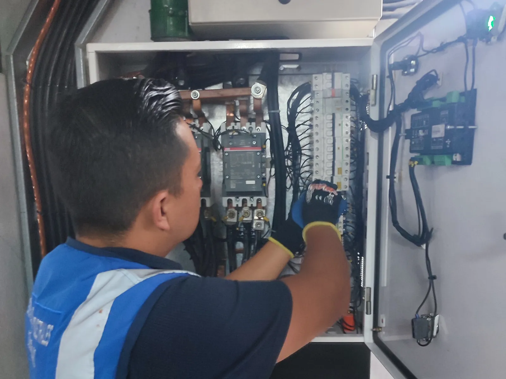
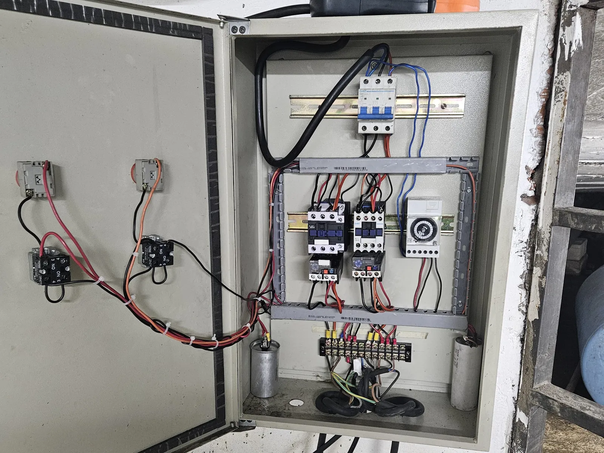
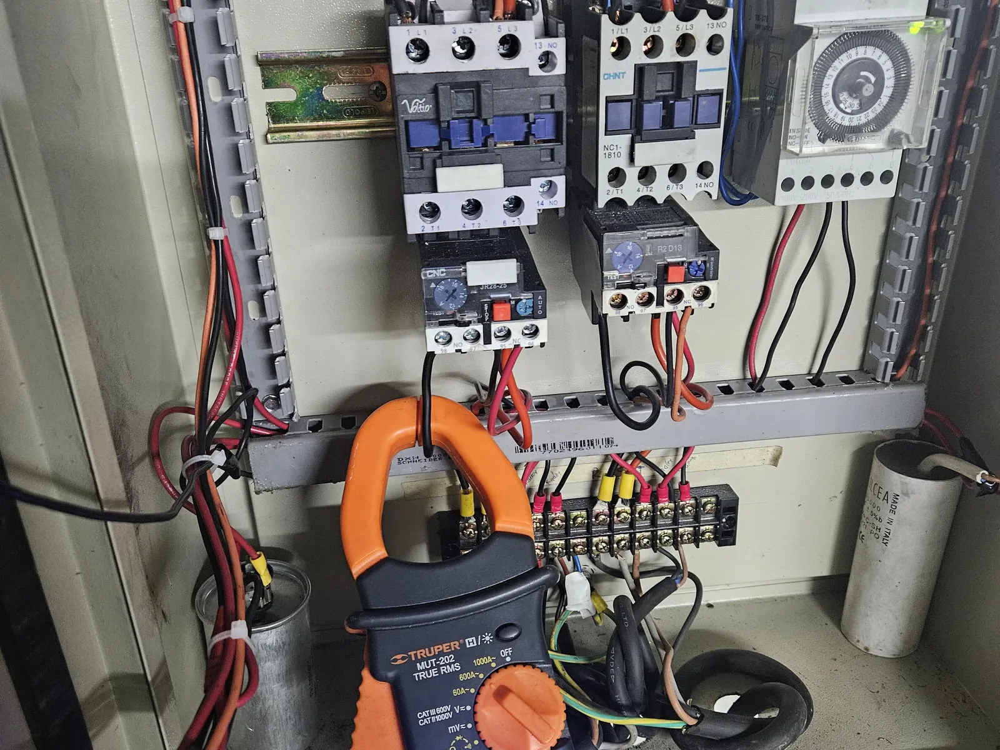
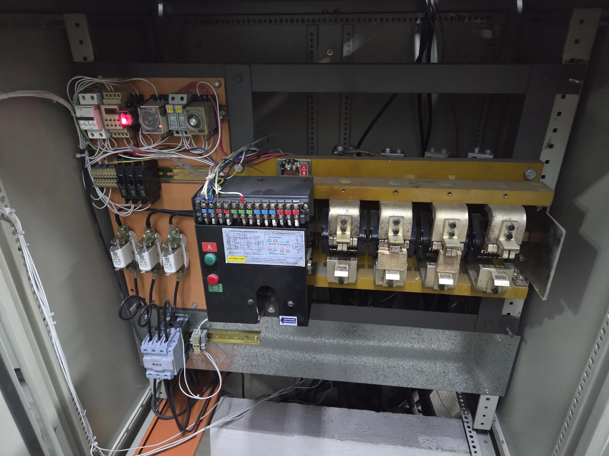
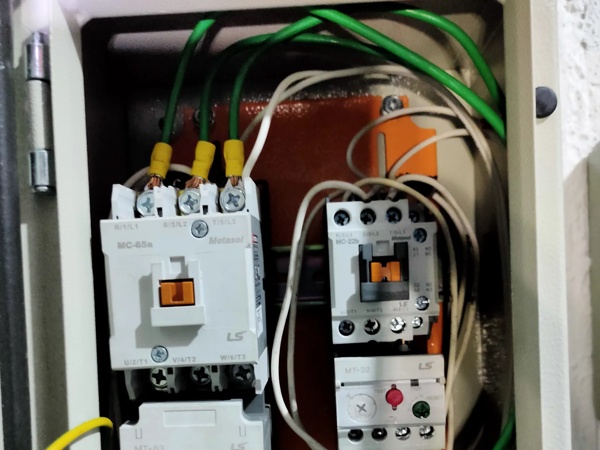
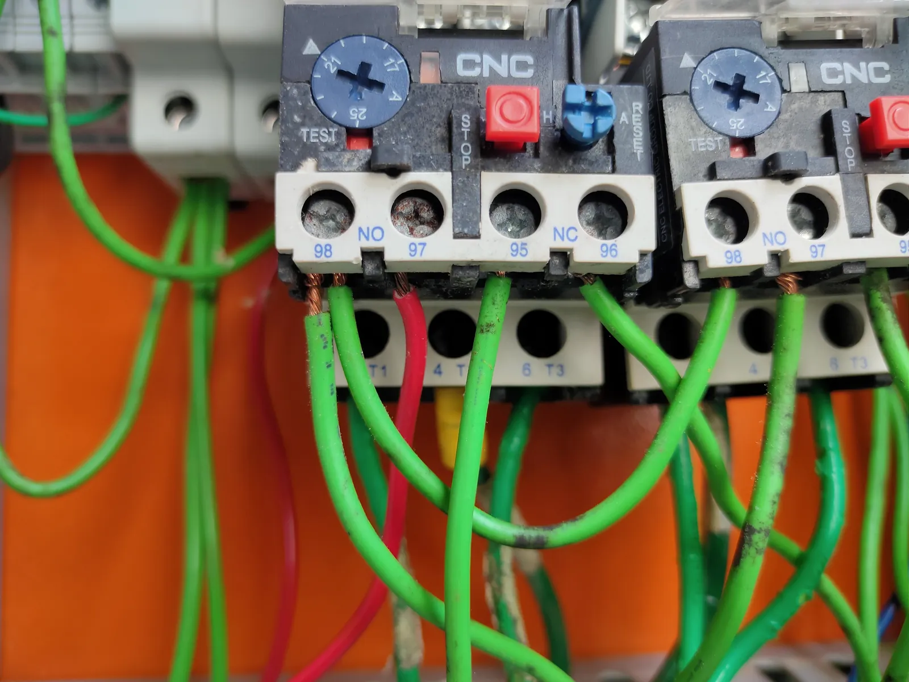

Breaker que se dispara
Puede estar relacionado con sobrecarga, cortocircuito, deterioro, conexión deficiente o una falla en el circuito protegido.
Servicio técnico en Quito
Diagnóstico y atención técnica de tableros de distribución, control de bombas y transferencia para identificar fallas en protecciones, maniobra, conexiones y automatismos existentes.
Puede enviar una fotografía exterior del tablero y describir las señales visibles sin abrirlo ni intervenirlo.

Una señal aislada no confirma por sí sola la causa. El diagnóstico técnico permite relacionar el síntoma con el circuito, las protecciones y el sistema controlado.
Puede estar relacionado con sobrecarga, cortocircuito, deterioro, conexión deficiente o una falla en el circuito protegido.
Puede estar relacionado con conexiones flojas, contactos deteriorados, circulación de corriente fuera de condición o daño de componentes.
Puede estar relacionada con protecciones abiertas, conexiones, alimentación, contactores o elementos del circuito de potencia.
Puede estar relacionado con la señal de mando, bobina, protecciones, enclavamientos, contactos o alimentación de control.
Pueden estar relacionadas con calentamiento, vibración, envejecimiento o condiciones de instalación que requieren evaluación técnica.
Puede estar relacionado con protecciones, mando, sensores, selector, contactores, relés o condiciones del equipo controlado.
Puede estar relacionada con señales de red, mando, protecciones, relés, mecanismo de conmutación o secuencia de control.
Puede estar relacionado con disparos, ajustes, alimentación, conexiones, desgaste o una condición externa al tablero.
Puede estar relacionado con alimentación de control, cableado, contactos, señales de campo o automatismos existentes.
El alcance se define según la condición observada, el sistema instalado y las condiciones seguras disponibles para la revisión.
Inspección y mediciones de circuitos de fuerza y control para orientar la identificación de la causa probable de una falla.
Revisión planificada de conexiones, componentes, protecciones y estado general para registrar necesidades de atención.
Corrección de fallas confirmadas y atención de componentes según diagnóstico y alcance previamente acordado.
Limpieza técnica bajo condiciones seguras e inspección de conexiones, borneras, cableado y barras accesibles.
Revisión de breakers, fusibles, protecciones, contactores, relés térmicos, temporizadores y circuitos asociados.
Diagnóstico de circuitos de arranque, parada, maniobra, señales y protecciones asociados a sistemas de bombeo.
Revisión de señales, mando, protecciones y secuencia de conmutación dentro de una intervención coordinada.
Diagnóstico de relés, temporizadores, sensores y controles existentes; según el equipo, el diagnóstico y el alcance, puede incluir PLC instalados.
Comprobaciones coordinadas de señales, continuidad cuando corresponda, arranque y parada del sistema, y conmutación cuando pueda realizarse de forma segura.
La revisión se adapta a la configuración real del tablero y al síntoma reportado.
Una secuencia ordenada ayuda a delimitar la revisión sin adelantar conclusiones ni exponer a los usuarios.
Recibimos solicitudes relacionadas con tableros instalados en:
Fotografías propias de inspecciones y trabajos técnicos. Las imágenes muestran componentes reales sin identificar clientes ni ubicaciones sensibles.





Atendemos solicitudes en Quito y sectores de los valles, según coordinación, ubicación y alcance técnico.
Puede existir una sobrecarga, cortocircuito, conexión deficiente, deterioro del breaker o una falla en el circuito protegido. No lo fuerce ni lo sustituya sin diagnóstico; solicite una revisión técnica.
No abra ni manipule el tablero. Evite continuar operando el sistema si hacerlo representa riesgo y coordine una revisión por personal técnico para identificar el origen.
La causa puede estar en protecciones, mando, sensores, selectores, contactores, relés o en una condición de la bomba. El circuito y el equipo controlado deben evaluarse como conjunto.
Puede faltar una señal de mando, alimentación de control o una condición de enclavamiento; también puede existir deterioro en la bobina, los contactos o las conexiones. Se requiere medición técnica.
La periodicidad depende del ambiente, uso, carga, historial y criticidad del sistema. Una inspección inicial permite definir un plan acorde con la condición real de la instalación.
Sí. Se pueden revisar señales, mando, protecciones, relés, mecanismo y secuencia dentro del alcance acordado y mediante pruebas coordinadas bajo condiciones seguras.
Según el caso, se aplican inspección, mediciones por personal técnico, comprobación de continuidad o señales y pruebas funcionales de arranque, parada o conmutación cuando correspondan y puedan coordinarse con seguridad.
Los automatismos básicos pueden incluir relés, temporizadores, sensores y controles. Un PLC instalado se considera únicamente según el equipo, el diagnóstico y el alcance de la intervención.
Una fotografía exterior sin abrir el tablero, descripción de las señales visibles, comportamiento del sistema, ubicación aproximada e historial reciente ayudan a orientar la solicitud sin intervenir el equipo.
El tablero puede formar parte de un sistema electromecánico más amplio que requiera una revisión coordinada.
Cuéntenos qué ocurre y envíe fotografías exteriores y las señales visibles para orientar la solicitud de revisión técnica en Quito.